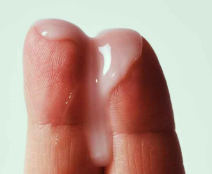
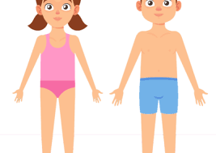
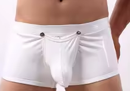
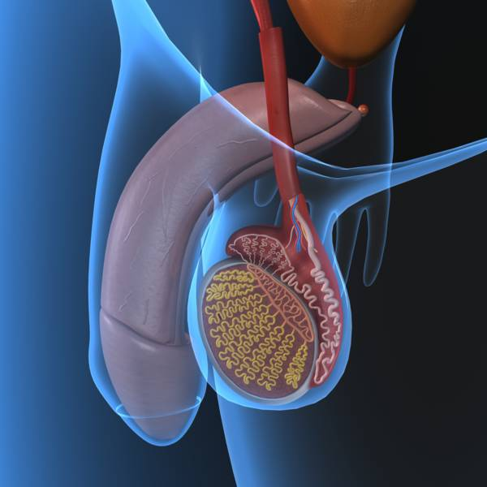
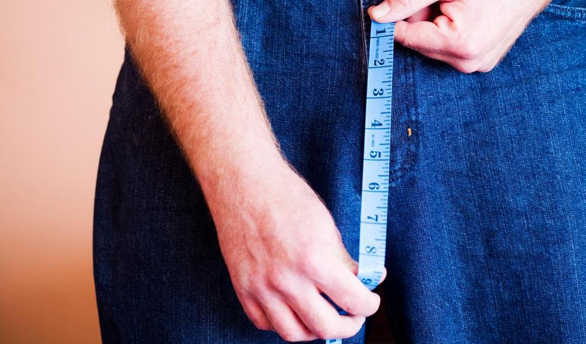

💦 Qu’est-ce que le précum ?
Un article simple sur le liquide pré-éjaculatoire.

Projet Design FPS Sexualité
Questions fréquentes avec des réponses claires, des emojis, et des images à ajouter.
Choisis une question pour lire l'article correspondant et voir des images quand tu les auras importées.
Un article simple sur le liquide pré-éjaculatoire.

Comprendre les changements à la puberté.

Les raisons normales des sécrétions matinales.

Un guide simple sur la peau, les testicules et le Pénis 🍆.

Réponses pour se sentir rassuré et normal.

Tout ce qu’il faut savoir sur les règles.
Une explication accessible et bienveillante.
Ouvrir le dialogue et réduire les inquiétudes.
Trucs et astuces pour gérer les moments gênants.